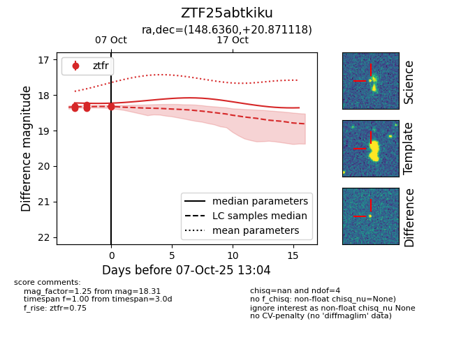
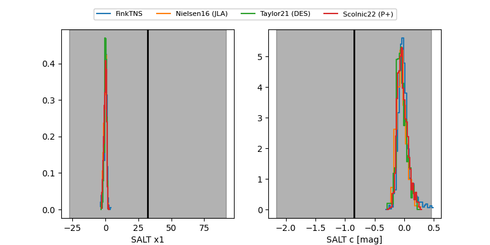

FINK: ZTF25abtkiku
Lasair: ZTF25abtkiku
ALeRCE: ZTF25abtkiku
ZTF25abtkiku (ztf,fink)
equatorial (ra, dec) = (148.6360,+20.87112)
galactic (l, b) = (211.8994,+49.32257)


last ztfr=18.31
9 ztfr detections